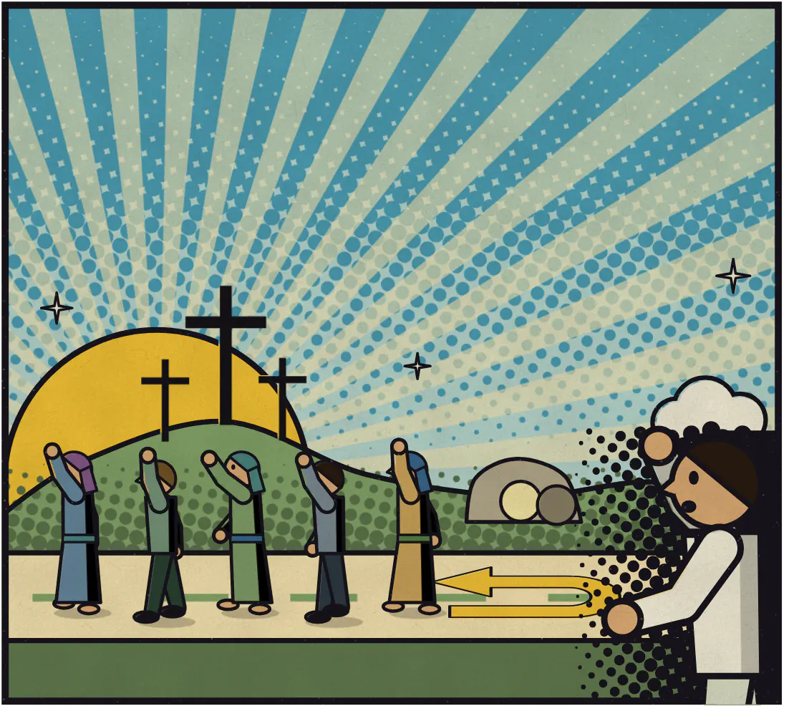
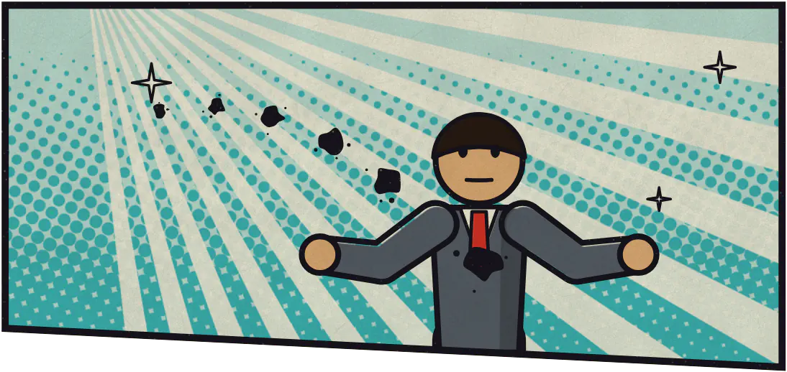
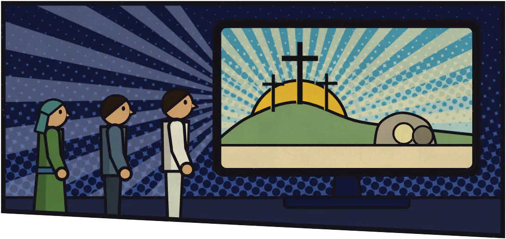
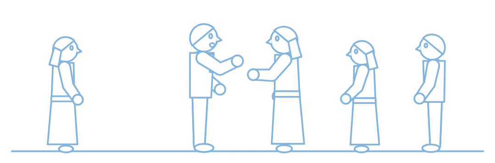

Turn Around
Now what?
If that song got to you, don't leave it there. Following Jesus starts small. Here is where to begin.
-

Talk to God
Following Jesus starts with reaching out to God. Talk to him. There are no special words. Tell him the truth: what you have done, that you want to turn around, and that you are trusting Jesus.
-
Read John
You get to know God by reading the Bible. Start with the book of John. One of Jesus's closest friends wrote it so that people could meet Jesus and believe in him. Read a little each day.
Open John, chapter 1 -

Watch
The JESUS film shows his life as the Gospel of Luke tells it. It's free, in more than 2,000 languages, and the same site has more you can learn from.
Watch JESUS

Don't do this alone
Nobody is watching this page, and I can't be your pastor. You need people. A church is just the people who follow Jesus where you live. If walking into one feels like too much, start smaller: tell one Christian you know what happened today.